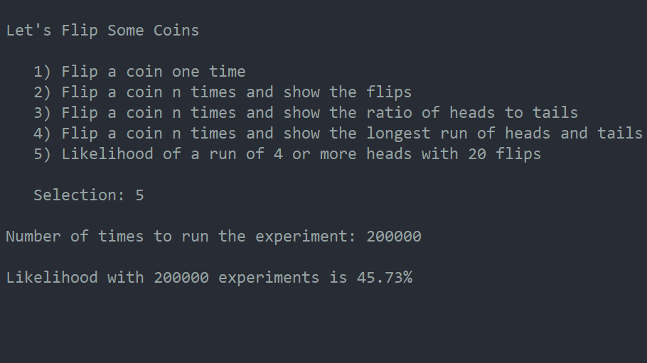
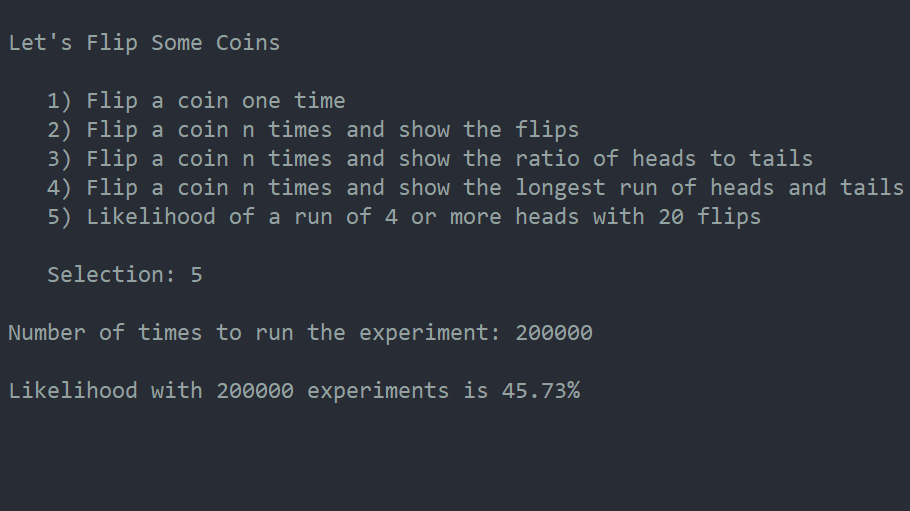
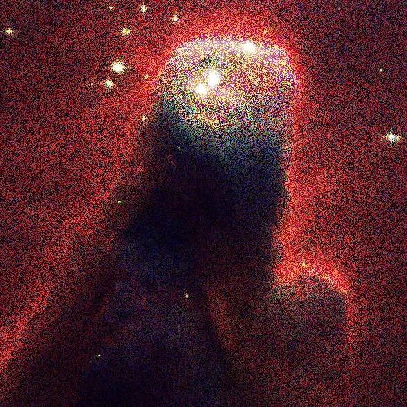
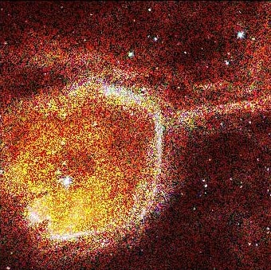
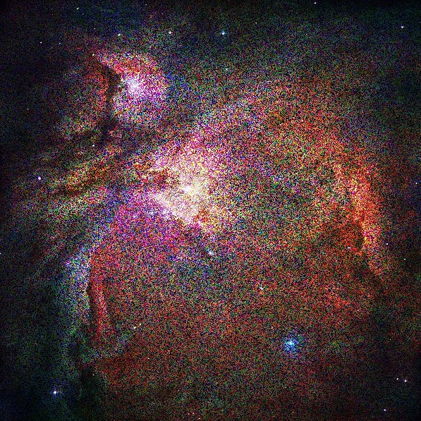
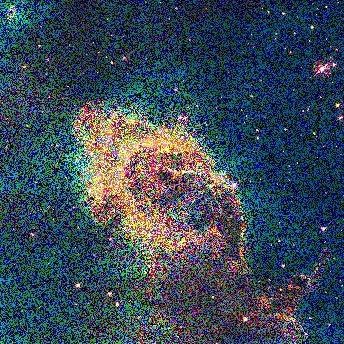

Computer Science is my other major at St. Ambrose University. I first found out about computer science through a parent from the daycare I used to work at. She seemed very happy and successful in her job and I asked her what she majored in when she was in college. She told me, "computer science." This planted the seed in my mind, but I still did not really understand what the subject was, since I was not very technologically inclined. Around this time, I had been developing my love for art and I did not really think too much about computer science for the next couple of years.
In the spring of 2021, I finally decided to buckle down and explore my college options. I decided on graphic design and once I started looking at the required classes and different job requirements, I noticed that computer science kept popping up. I made the decision that it would be extremely beneficial for me to have coding skills. I took an online Udemy course for Python in August so I could dip my toes in the water before I started school. I ended up loving it! Since I had already learned to pay close attention to detail through my art, programming has come relatively easy to me. Even though technology used to seem daunting to me, I feel that I have a unique way of finding solutions because of my artistic background.
Now that I am in school, I truly love programming. The homework that is assigned to me is very satisfying and I find myself cheering for joy after debugging code that had me wracking my brain for an hour. Right now, I am taking a Foundations of Computer Science course, which is where I am learning the skills to make the website you are looking at right now! I enjoy this front-end coding class and I have been having a lot of fun with the CSS rules. I like using HTML and JavaScript because I can see the results of my coding come to life in color on a website. My Programming I class, which is Python-based, is different in some ways, since it's more back-end coding. I actually think it is just as much fun, though, because I get to solve a lot of logical problems. I am learning more about this type of math in my Discrete Structures course and it definitely feels a lot more applicable to real life than high school math.
This program shows a menu with 5 options. The user then chooses who they want to play as and the computer's choice is randomly generated. The program uses many if/elif/else statements and returns unique strings, depending on the user and computer choices.
The program shows a menu for the user to choose from. There are options that complete relatively simple tasks, such as flipping a coin, using a random integer generator, and returning "Heads" or "Tails." It can also complete more complicated tasks, such as using nested for loops and if/else statements to find the likelihood of getting four "Heads" in a row.
 

This program averages pixels from PPM files and converts a noisy image into a significantly higher resolution one. This is done using nested for loops. I really loved creating this program and I was impatient during the whole process because I could not wait to see the end results! I would love to have a job doing this for photographers. Click on the buttons below to see the "before" images turn into the "after" images.
|  |  |
|  |  |
This program solves simple sudoku puzzles by reading in a text file and implements nested sets and while loops in its algorithm. The video below shows an example of the program solving a simple puzzle and then failing to solve a slightly more difficult one.
This program involved using a recursive approach to the algorithm. It creates random computer-generated colored squares that look like Piet Mondrian's abstract art. This was also definitely my favorite program that I have written so far because I got to be creative for the second part of it (right image). I tweaked it so that some of the squares turned black or a different color, depending on their location. This resulted in a Tetris-like pattern.
| Return To Homepage | See My Digital Art! | See My Traditional Art! |